This vignette demonstrates the basics of running a dyngen simulation. If you haven’t done so already, first check out the installation instructions in the README.
A dyngen simulation can be started by providing a backbone to the initialise_model() function. The backbone of a dyngen model is what determines the overall dynamic process that a cell will undergo during a simulation. It consists of a set of gene modules, which regulate eachother in such a way that expression of certain genes change over time in a specific manner.
library(tidyverse)
library(dyngen)
set.seed(1)
backbone <- backbone_bifurcating()
config <-
initialise_model(
backbone = backbone,
num_tfs = nrow(backbone$module_info),
num_targets = 500,
num_hks = 500,
verbose = FALSE
)
# the simulation is being sped up because rendering all vignettes with one core
# for pkgdown can otherwise take a very long time
set.seed(1)
config <-
initialise_model(
backbone = backbone,
num_cells = 1000,
num_tfs = nrow(backbone$module_info),
num_targets = 50,
num_hks = 50,
verbose = FALSE,
download_cache_dir = tools::R_user_dir("dyngen", "data"),
simulation_params = simulation_default(
total_time = 1000,
census_interval = 2,
ssa_algorithm = ssa_etl(tau = 300/3600),
experiment_params = simulation_type_wild_type(num_simulations = 10)
)
)
plot_backbone_statenet(config)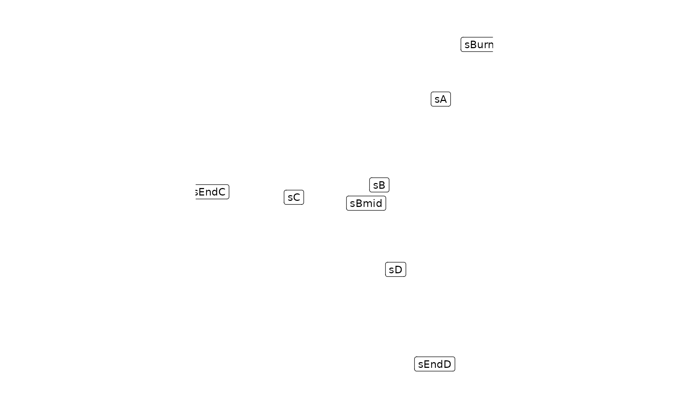
plot_backbone_modulenet(config)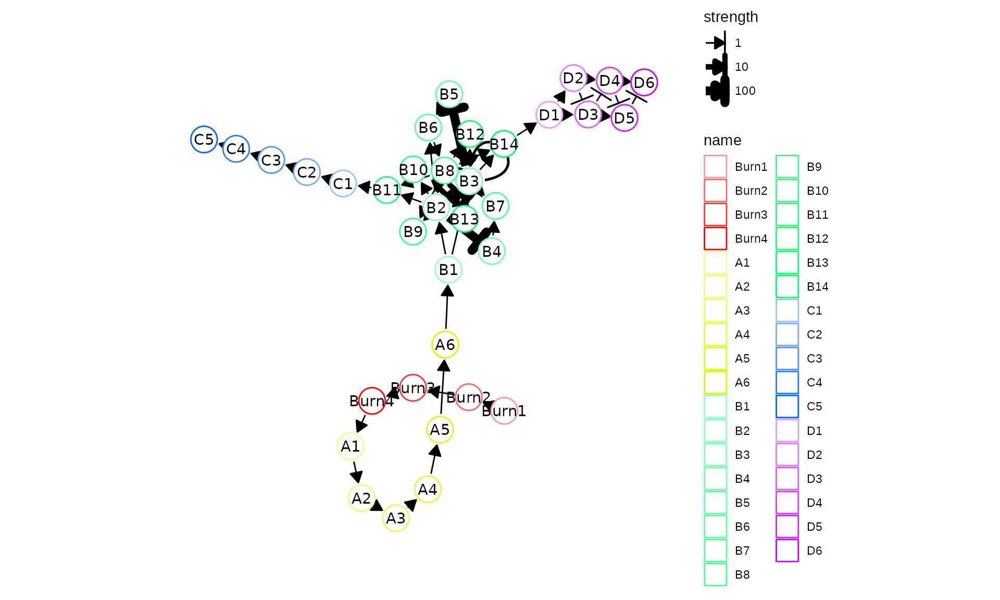
For backbones with all different sorts of topologies, check list_backbones():
## [1] "bifurcating" "bifurcating_converging"
## [3] "bifurcating_cycle" "bifurcating_loop"
## [5] "binary_tree" "branching"
## [7] "consecutive_bifurcating" "converging"
## [9] "cycle" "cycle_simple"
## [11] "disconnected" "linear"
## [13] "linear_simple" "trifurcating"Each gene module consists of a set of transcription factors. These can be generated and visualised as follows.
model <- generate_tf_network(config)
plot_feature_network(model, show_targets = FALSE)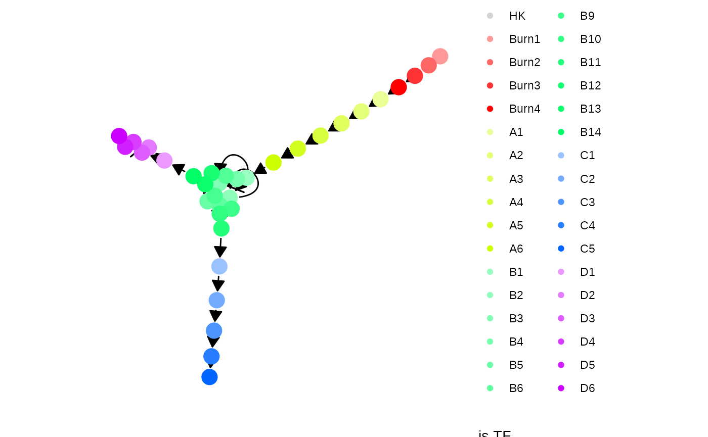
Next, target genes and housekeeping genes are added to the network by sampling a gold standard gene regulatory network using the Page Rank algorithm. Target genes are regulated by TFs or other target genes, while HKs are only regulated by themselves.
model <- generate_feature_network(model)
plot_feature_network(model)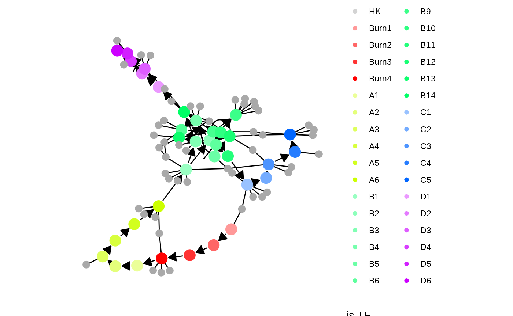
plot_feature_network(model, show_hks = TRUE)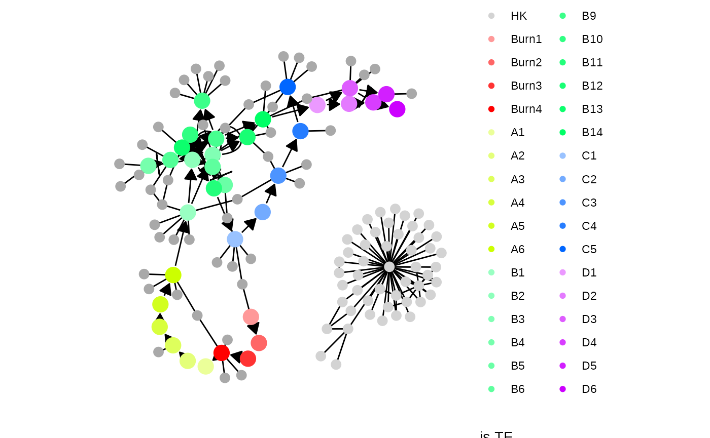
Note that the target network does not show the effect of some interactions, because these are generated along with other kinetics parameters of the SSA simulation.
model <- generate_kinetics(model)
plot_feature_network(model)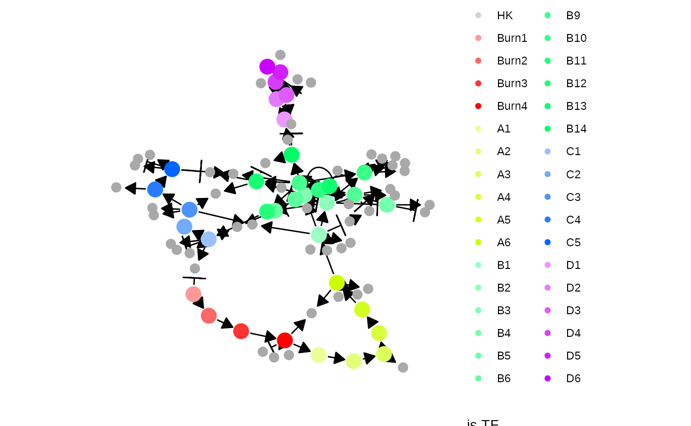
plot_feature_network(model, show_hks = TRUE)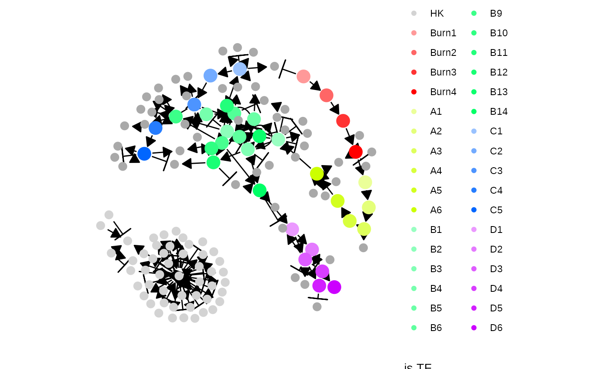
The gold standard is simulated by enabling certain parts of the module network and performing ODE simulations. The gold standard are visualised by performing a dimensionality reduction on the mRNA expression values.
model <- generate_gold_standard(model)
plot_gold_simulations(model) + scale_colour_brewer(palette = "Dark2")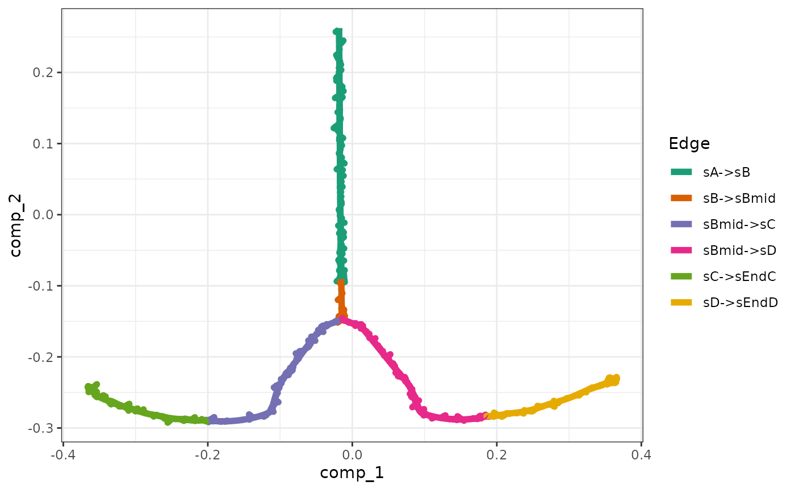
The expression of the modules (average of TFs) can be visualised as follows.
plot_gold_expression(model, what = "mol_mrna") # mrna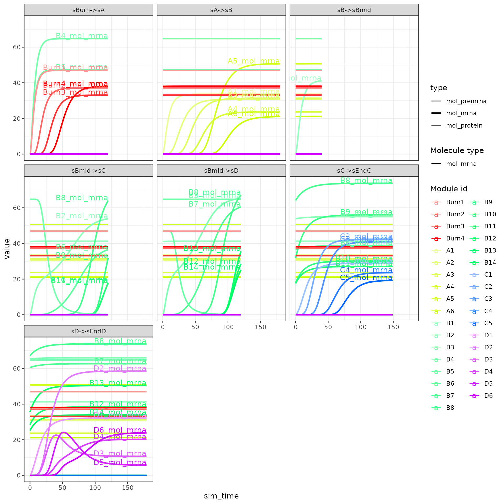
plot_gold_expression(model, label_changing = FALSE) # premrna, mrna, and protein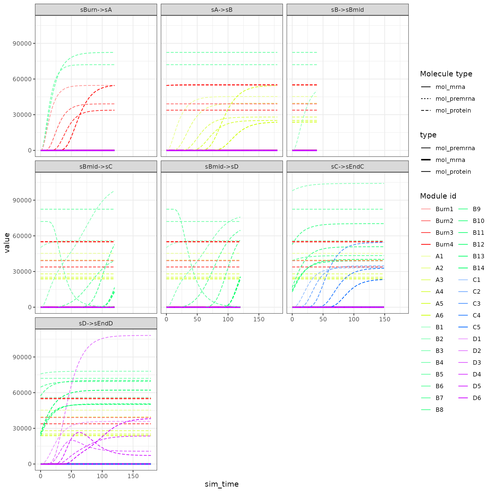
Cells are simulated by running SSA simulations. The simulations are again using dimensionality reduction.
model <- generate_cells(model)
plot_simulations(model)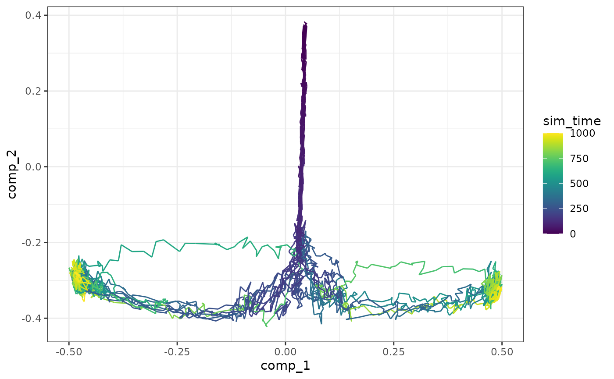
The gold standard can be overlayed on top of the simulations.
plot_gold_simulations(model) + scale_colour_brewer(palette = "Dark2")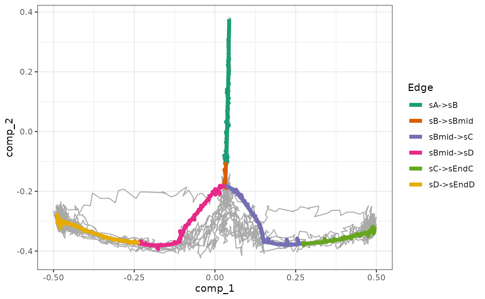
We can check how each segment of a simulation is mapped to the gold standard.
plot_gold_mappings(model, do_facet = FALSE) + scale_colour_brewer(palette = "Dark2")The expression of the modules (average of TFs) of a single simulation can be visualised as follows.
plot_simulation_expression(model, 1:4, what = "mol_mrna")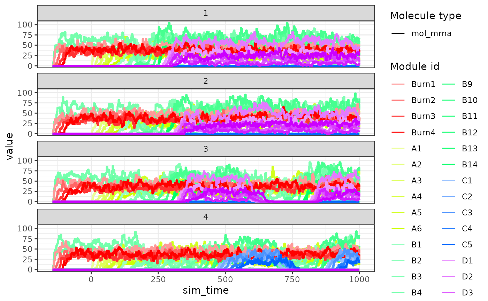
Effects from performing a single-cell RNA-seq experiment can be emulated as follows.
model <- generate_experiment(model)Converting the dyngen to a dyno object allows you to visualise the dataset using the dynplot functions, or infer trajectories using dynmethods.
dataset <- as_dyno(model)## Loading required namespace: dynwrapdynplot
library(dynplot)
plot_dimred(dataset)
plot_graph(dataset)
library(dyno)
pred <- infer_trajectory(dataset, ti_slingshot())
plot_dimred(pred)dyngen (>= 0.4.1) allows converting the output to an anndata, SCE or Seurat object as well. Check out the anndata documentation on how to install anndata for R.
library(anndata)
ad <- as_anndata(model)
ad$write_h5ad("dataset.h5ad")
sce <- as_sce(model)
seurat <- as_seurat(model) dyngen also provides a one-shot function for running all of the steps all at once and producing plots.
out <- generate_dataset(
config,
make_plots = TRUE
)
dataset <- out$dataset
model <- out$model
print(out$plot)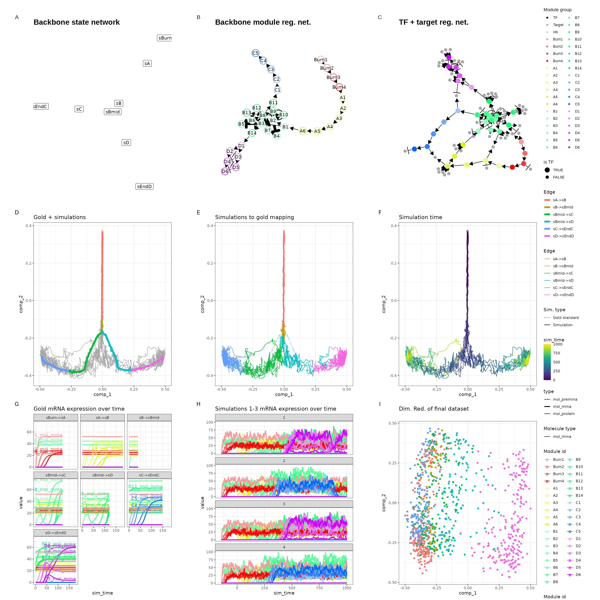
dataset and model can be used in much the same way as before.
library(dyno)
plot_dimred(dataset)
plot_graph(dataset)
pred <- infer_trajectory(dataset, ti_slingshot(), verbose = FALSE)
plot_dimred(pred)